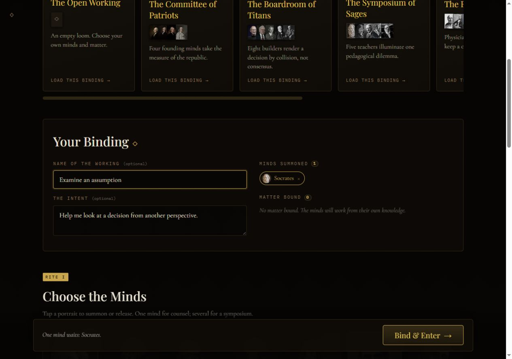

THE BESPOKE PLATFORM / BUILD YOUR OWN
The Harness
Create a chamber around your own question. The Harness is the custom platform: choose your personas, bring your source material, and shape the conversation yourself.
- Choose one persona or bring several together
- Add pasted text or text files
- Save a transcript with its sources and prompt record
